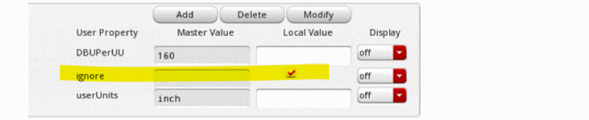
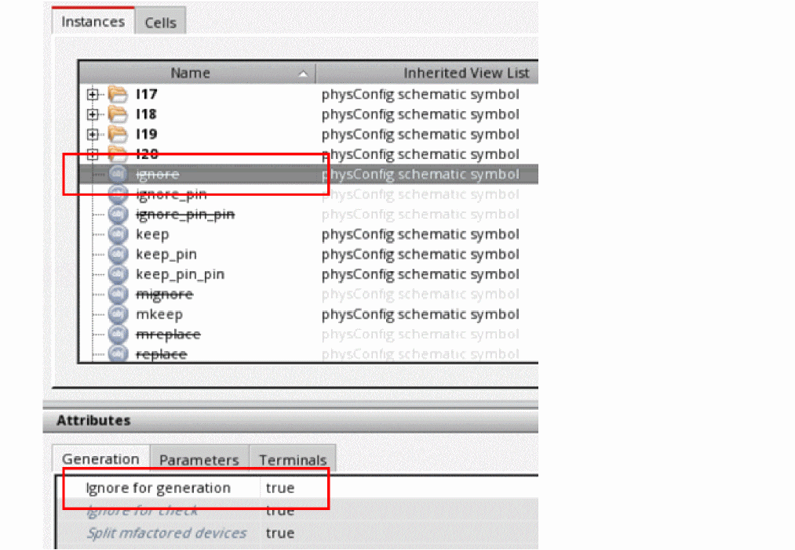

LVS Resistors in Electromagnetic Simulations
If a selected net contains an LVS resistor, a resistor with a vary small resistance value, depending on how the resistor is placed in the schematic or its properties are set in Virtuoso, the information about the LVS resistor is also sent to the electromagnetic simulator along with the details of the net to which it is connected.
Virtuoso considers LVS resistors that are added in the following three scenarios:
Scenario 1: The LVS resistor is added as an instance in both the schematic and the layout
In this scenario, you can select the LVS resistor like any other instance. If you select it on the layout canvas and add to the model, the LVS resistor is listed on the Selection tab and sent to the electromagnetic solver along with other nets and instances. It is also saved as a part of the S-param file saved after simulation.
Scenario 2: The LVS resistor is a cut shape on an LPP that is defined as a stopping layer for the connectivity extractor
The net to which the resistor is attached is split in both the schematic and the layout views. In the example figure shown above, the resistor named ignore is placed in the schematic and the net is split into two parts, ignore_l and ignore_r. Only the schematic view contains the resistor as an instance. The layout view shows it as a virtual metal resistor recognition shape. This layer is defined as a stopping layer in the technology file. For details, see validLayers
In this case, you should define the resistor as ignored in the Layout XL bindings. It will then be automatically removed when the extracted view is generated.
To ignore the resistor instance, do one of the following:
-
In the Edit Object Properties form for the schematic instance, set the ignore property.
 -
To ignore a specific instance of an LVS resistor, on the Instances tab of the Configure Physical Hierarchy window, set the Ignore for generation property for that resistor instance to
true.
 -
To ignore all instances of an LVS resistor, set the Ignore for generation property for the resistor cell to
trueon the Cells tabs of the Configure Physical Hierarchy window.
For more details, refer to Ignoring a Cell for Generation or Check in Virtuoso Layout Suite XL: Connectivity Driven Editing User Guide.
When you configure these settings, the tool ignores the LVS resistor for electromagnetic simulation, but lists it as an embedded component in the header of the S-param file.
Scenario 3: The LVS resistor is a shape that is ignored by the connectivity extractor
The net to which the LVS resistor is connected is split only in the schematic view. In the example shown above, the resistor named replace is placed in the schematic and the net is split into replace_l and replace_r. Both parts of the net in the schematic are bound to the common net in the layout, which is replace_l in this example.
In the layout, there is either no metal resistor recognition shape at all or it is on an LPP that is not defined as a stopping LPP by the XL extractor and is, therefore, ignored by the connectivity extractor.
In this scenario, you can ignore the resistor by specifying it as a short on the Instances tab of the Configure Physical Hierarchy window.
In this example, plus and minus are the names of the pins of the LVS resistor.
The short devices are ignored during electromagnetic simulation and are specified as embedded components in the header of the S-param file.
For more details, refer to the
Return to top